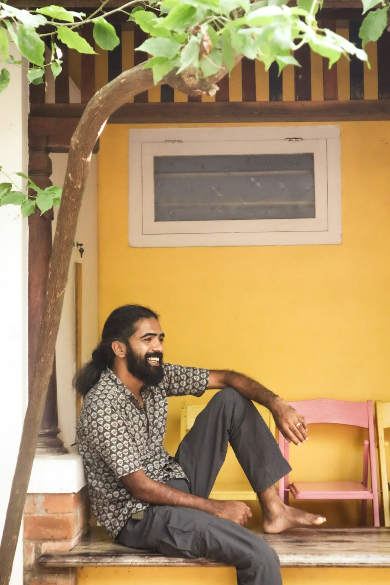
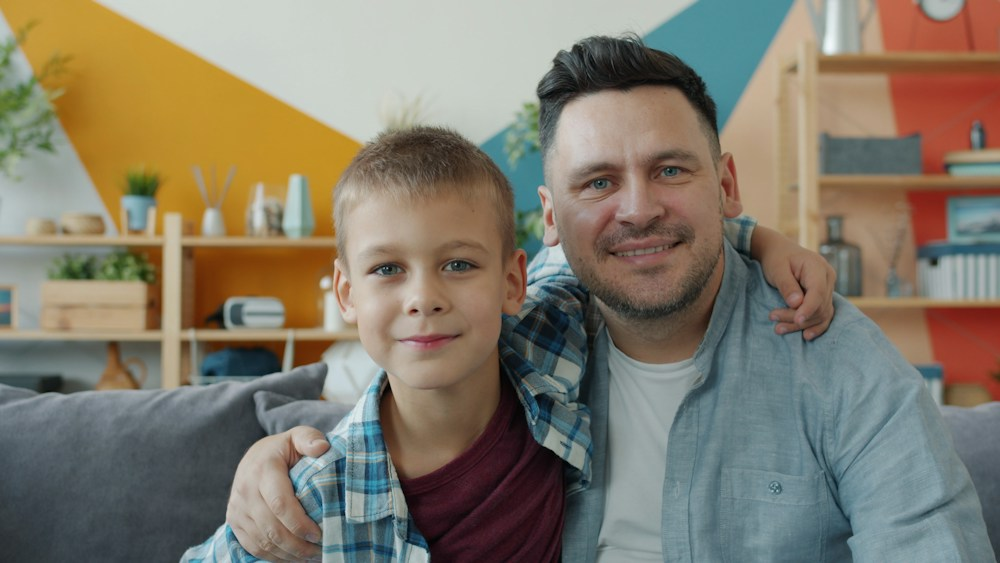

Individuals
People in therapy
Support between sessions, by voice or text, any time. A plan that adapts as things change. No therapist yet? Start on your own and explore booking one when you're ready.
Know what to do on a hard night, not just in your therapist's office.

Families
Families & support people
With the patient's permission, a parent, partner, or friend gets specific steps they can take, not just a phone number to call in an emergency.
A few things a parent can do each day to help their child's progress.
Clinicians
Therapists & clinics
See trends across your whole caseload, run group sessions, and walk into each session knowing how things went since the last one. You approve each plan before your client sees it.
Works alongside the note and practice tools you already use.